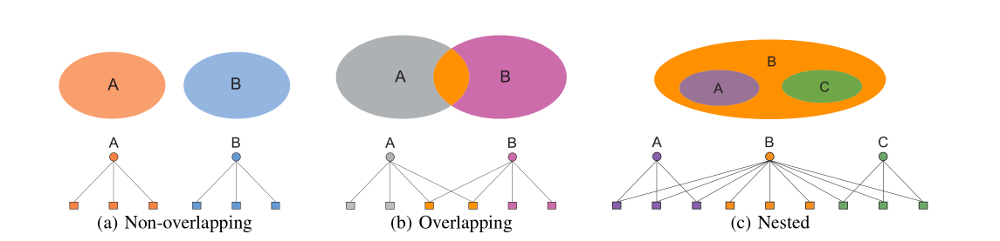

从图和网络中挖掘社交圈 AGM 到BigCLAM
AGM和BigCLAM是Stanford搞出来的一种较新的聚类模型，与传统的K-means和 EM算法有着很大的区别。Home
I like you or not, you are fucking idiot
问题是这样的，给我们一个Graph(V,E)，我们想要在这个图中找出聚类模型， 图的例子诸如Facebook的好友关系图, 蛋白质种类的分布什么的，就像下面这 种。
Affiliation Graph Model
先不管我们能不能从图中挖掘出聚类信息，我们先假设存在这样的模型，那么 它该是什么样子呢？我们大概会需要这样一些元素：
- V:node
- C:community，或称社区，如果V在这样的类中，就说V属于C。
- M:member，每个社区有它的成员。
$$ P_c $$ , 一个和C有关的概率，这个概率是什么我们一会再说。
这样，我们就有了一个四元模型 B(V, C, M, {p_c}), 这就是最基本的AGM。现 在我们逆向思考，假设我们有这样一个模型，也就是我们知道了那个节点属于哪 个圈子，每个圈子的概率是多少。Affiliation Graph Model 的好处是它可以描 述存在Overlapping，不存在Overlapping甚至是包含关系。
现在利用我们现有的模型来对网络之中的点建模，对于在网络当中的任何两个点u, v, 我们猜测u,v之间存在边的概率是1 - prod(1 - p_c(u,v) )，现在P_c的意义就十 分清楚了，p_c表示如果u，v都是c的成员的时候u，v之间存在边的概率。
BigCLAM模型
在 Affiliation Graph Model中我们没有指定p_c是什么，它可以是一个相对C固 定的值。BigCLAM的全称是Cluster Affiliation Model for Big data，它和AGM 非常相似，唯一的区别是现在我们使用更复杂的模型来对p_c建模，现在我们使用 1 - exp(- (f_c(v) * f_c(u)))来建模，这实际上是一个非常好的模型，首先，当 f(v)或者f(u)为0的时候p_c为0，其次，当f(v),f(u)增大的时候p_c也逐渐增大, 最后, p_c的增长的曲线符合数据的实际情况。
当我们引入多个Community的时候，按照AGM的模型，u, v之间存在边的模型为
p(u, v) = 1 - prod(exp(-f_c(v) * f_c(u))),
p(u, v) = 1 - exp(sum(-f_c(v) * f_c(u))),
p(u, v) = 1 - exp(- F(v) * F(u)' )
BigCLAM的模型强调的一点是如果(u,v)同时属于多个Community，它们之间存在边的 概率会显著增大，这个特性就是BigCLAM模型的基本假设。
求解BigCLAM模型
BigClam模型可以利用梯度下降的方式来求解